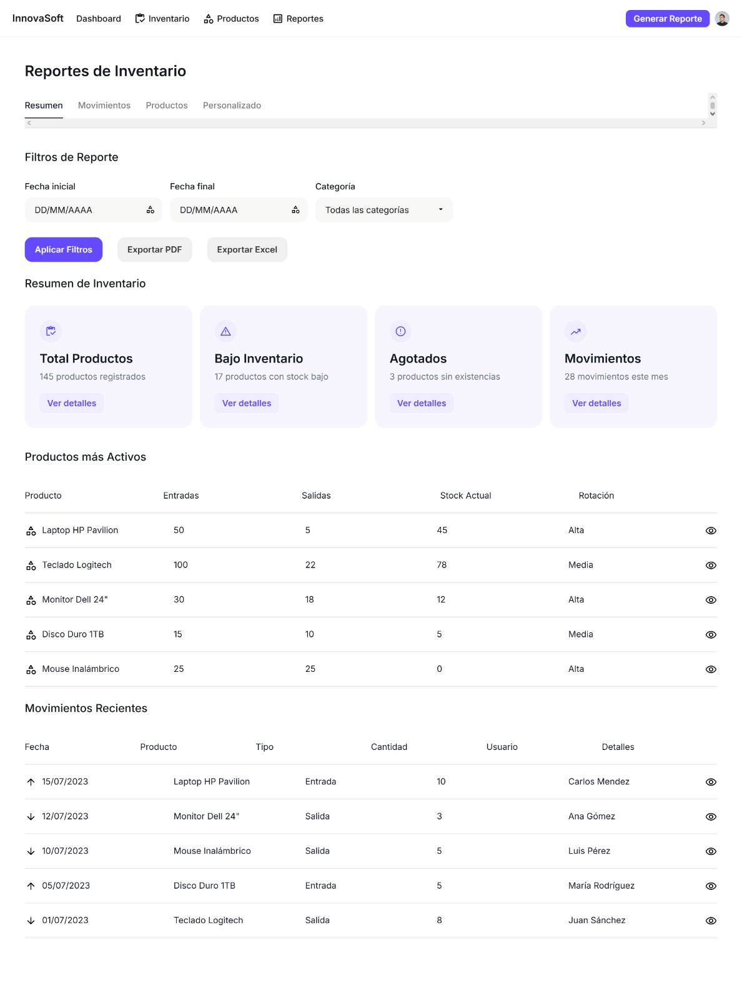

Permitir registrar, visualizar y actualizar el estado de los productos almacenados. Este módulo incluye detalles como el nombre del producto, la cantidad disponible, las fechas de ingreso y salida, y las alertas de bajo inventario. 